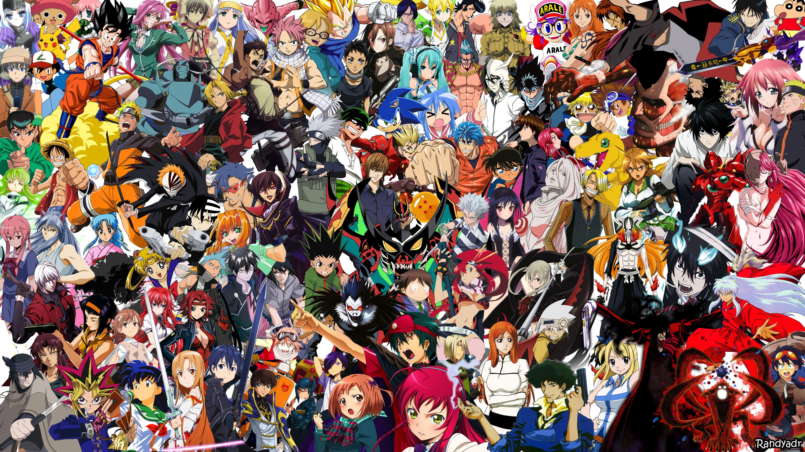

Anime Trivia Questions

1. Who is the main character of Dragon Ball?
2. What is Naruto's trademark move?
3. Who is the Japanese voice actor for Inuyasha?
4. What is the Japanese name for Jimmy Kudo?
5. How did the creator of Durara come up with the title for the manga?
6. Who is the creator of Hunter X Hunter?
7. Which of the following is NOT an actual term that describes a character development process?
8. Which of the following studios created the anime "Casshern"?
9. Who performed the 3rd opening for the anime "Full Metal Alchemist: Brotherhood"?
10. What is the YU-GI-OH character, Joey Wheeler, called in the Japanese version of the anime